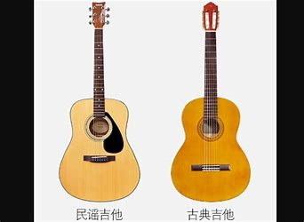
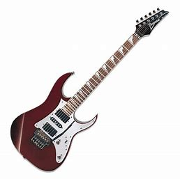

吉他（意大利语：Chitarra），又译为结他或六弦琴。是一种弹拨乐器，通常有六条弦，形状与提琴相似。
吉他在流行音乐、摇滚音乐、蓝调、民歌、佛朗明哥中，常被视为主要乐器。而在古典音乐的领域里，吉他常以独奏或二重奏的型式演出；当然，在室内乐和管弦乐中，吉他亦扮演着相当程度的陪衬角色。
古典吉他与小提琴、钢琴并列为世界著名三大乐器。
吉他根据不同的结构和发声原理可以大致分为木吉他（民谣/指弹吉他，弗拉门戈吉他）、电吉他（如标准电吉他和低音电吉他）和古典6弦琴（古典吉他）三种。
古典吉他
原名古典6弦琴。和竖琴（古典23弦琴、古典46弦琴等）、lute琴等同属古典琴大类。可以独奏、重奏，与交响乐队协奏等等。是吉他家族中艺术性最高，适应面最广，最有深度，最受艺术界肯定的一类，被称为“世界三大经典乐器”（另外两种是钢琴，小提琴），其同时具备钢琴的富丽堂皇与小提琴的优雅婉转，又有“乐器王子”之称；古典吉他早已经成为一种国际化的正规乐器，并不像弗朗明哥吉他只局限于演奏西班牙民族音乐。年龄较小或音乐天赋较高的孩子学吉他就应当学习古典吉他，只有古典吉他才具有与钢琴、小提琴并驾齐驱的地位。它的演奏姿势严格，技术也是最为规范和深奥的。

民谣吉他
即老百姓们常见的弹唱吉他。正规的民谣吉他，它的琴弦是用六个白色固弦钉固定在琴码上的，各弦之间距离为7mm，共鸣箱结合处在14品。特点：1.钢丝弦。2.个头比较大些，琴颈较细。3.琴弦为钢弦与琴箱接头处为十四品。4.表面板上可能有一块半月形保护板。5.油漆往往较花哨，欠庄重。以伴奏为主。
电吉他
电吉他是科学技术发展的产物，普通吉他加上拾音器、效果器、音箱等附件就是电吉他，电吉他主要用于电声乐队的中声部填充、过门、间奏，有时会起领奏作用。其发声原理与传统吉他不同，不是以箱体的的振动发声，而是运用了电磁学原理，它的琴身是实体的木头而非空的音箱。在琴身上装有线圈。它们被称做拾音器。当吉他弦振动时，切割了拾音器的磁感线，从而使琴身中的导线中产生不同频率的电流，当这些电流通过电子音箱还原时，就成了电吉他的声音。
